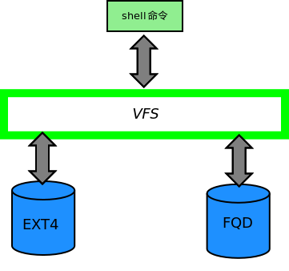

软件开发与实践3开题报告
HITCS-2
项超
张琳瑞
-- a fast query distributed data system
- is a filesystem ?
- is a database system ?
- ?
it is not important
- pay attention to store
-
- data-format is familiar to machine
- give more task to CPU
- can view friendly to people
-
implement
programming language
environment
version control system
file organization
implement
function
-
basic
- Create
- delete
- open
- close
- read
- write
-
future
- query...
- distributed...
- and more--
Interface
Connect with OS
- in the kernel ?
- as a module ?
VFS

进度安排
2-3 weeks
4-8 weeks
9-14 weeks
15-16 weeks
17 weeks
team works team works team works ...